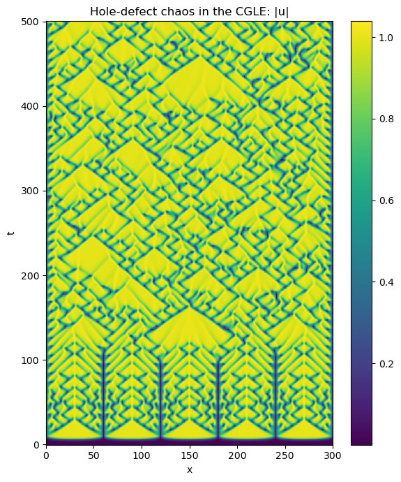

Dedalus solves differential equations using spectral methods. It’s open-source, written in Python, and MPI-parallelized
J.1 Coordinates, Distributors, and Bases
This tutorial walks through the basics of setting up and using coordinate, distributor, and basis objects in Dedalus. In Dedalus, we represent fields and solve PDEs using spectral discretizations. To set these up, we choose spectral bases for the spatial coordinates in the problem. Once the coordinates are defined, they are collected into a distributor object, which takes care of how fields and problems are split up and distributed in parallel
import numpy as npimport matplotlib.pyplot as pltimport dedalus.public as d3
2025-09-27 09:46:09,952 dedalus 0/1 WARNING :: Threading has not been disabled. This may massively degrade Dedalus performance.
2025-09-27 09:46:09,953 dedalus 0/1 WARNING :: We strongly suggest setting the "OMP_NUM_THREADS" environment variable to "1".
J.1.1 Coordinates
In Dedalus, the spatial coordinates of a PDE are represented by coordinate objects. For simple 1D problems, you can define a coordinate directly using the Coordinate class. For higher-dimensional problems, you’ll usually combine multiple coordinates into a CoordinateSystem.
Dedalus currently includes several built-in coordinate systems:
CartesianCoordinates: works in any number of dimensions
PolarCoordinates: with azimuth and radius
S2Coordinates: with azimuth and colatitude
SphericalCoordinates: with azimuth, colatitude, and radius
When you create a CoordinateSystem, you just provide the names you’d like to use for each coordinate, in the order shown above. For example, let’s walk through how to set up a problem in 3D Cartesian coordinates
coords = d3.CartesianCoordinates('x', 'y', 'z')
J.1.2 Distributors
A distributor object handles the parallel decomposition of fields and problems. Every problem in Dedalus needs a distributor, even if you’re just running in serial
To create a distributor, you provide the coordinate system for your PDE, specify the datatype of the fields you’ll be working with, and, if needed, supply a process mesh to control parallelization
# No mesh for serial / automatic parallelizationdist = d3.Distributor(coords, dtype=np.float64)
Parallelization & process meshes
When you run Dedalus under MPI, it parallelizes computations using block-distributed domain decompositions. By default, Dedalus spreads the work across a 1-dimensional mesh of all available MPI processes—this is called a slab decomposition. If you want more flexibility, you can specify a custom process mesh with the mesh keyword when creating a domain. This allows pencil decompositions, where the domain is split along more than one direction. Just keep in mind that the total number of MPI processes must match the product of the process mesh shape you provide
There’s also an important restriction: the mesh dimension can’t be larger than the number of separable coordinates in the linear part of your PDE. In practice, this usually means you can parallelize over periodic or angular coordinates. For fully separable problems—like a fully periodic box or a simulation on the sphere—the mesh dimension must be strictly less than the total dimension
Layouts
The distributor object sets up the machinery needed to allocate and transform fields in parallel. A key part of this is an ordered set of Layout objects, which describe how the data should be represented and distributed as it moves between coefficient space and grid space. Moving from one layout to another involves two types of operations: spectral transforms (done locally) and global transposes (which shuffle data across the process mesh to put it in the right place)
The basic algorithm works like this:
We start in coefficient space (layout 0), where the last axis is local (not distributed)
Then we transform that last axis into grid space (layout 1)
If needed, we perform a global transpose so that the next axis becomes local, and transform that axis into grid space
This process repeats until all axes have been transformed into grid space (the final layout)
Let’s take a look at the layouts for the domain we just built. Since this is a serial computation, no global transposes are required—all axes are already local. So the layout transitions are just coefficient-to-grid transforms, working backwards from the last axis
for layout in dist.layouts:print(f'Layout {layout.index}: Grid space: {layout.grid_space} Local: {layout.local}')
To get a sense of how things work in a distributed simulation, we’ll change the process mesh shape and rebuild the layout objects. For this example, we’ll bypass the usual internal checks on the number of available processes and related settings, just so we can see how the layouts are constructed in a parallel setup
# Don't do this. For illustration onlydist.mesh = np.array([4, 2])dist.comm_coords = np.array([0, 0])dist._build_layouts(dry_run=True)
for layout in dist.layouts:print(f'Layout {layout.index}: Grid space: {layout.grid_space} Local: {layout.local}')
We can see that there are now two additional layouts, corresponding to the transposed states of the mixed-transform layouts. Two global transposes are necessary here in order for the \(x\) and \(y\) axes to be stored locally, which is required to perform the respective spectral transforms. Here’s a sketch of the data distribution in the different layouts:
In most cases, you won’t need to interact with layout objects directly. However, it’s useful to understand this system, since it controls how data is distributed and transformed. Being aware of it will help when working with field objects, as we’ll see in later sections
Coefficient Space
This is the representation of a function in terms of its spectral coefficients
Functions are expressed as linear combinations of basis functions (Fourier, Chebyshev, Legendre, etc.)
Here, \(\hat{f}_k\), \(\hat{f}_n\) are the data in coefficient space
Differentiation and integration are simple in this representation:
Fourier: differentiation \(\rightarrow\) multiply coefficients by \(ik\)
Chebyshev: differentiation \(\rightarrow\) apply a simple linear recurrence
Analytical operations are most efficient in coefficient space
Grid Space
This is the representation of a function by its values on discrete grid points
It’s what you use when you want to “see the shape” of a function or set initial conditions
Examples:
Fourier basis \(\rightarrow\) values on uniformly spaced grid points
Chebyshev basis \(\rightarrow\) values on non-uniform grid points (clustered near the boundaries)
Nonlinear operations (products, \(f(u)\)) are natural and efficient in grid space
J.1.3 Bases
Creating a basis
Each type of basis in Dedalus is represented by a separate class. These classes define the corresponding spectral operators as well as transforms between the grid space and coefficient space representations of functions in that basis. The most commonly used bases are:
RealFourier for real periodic functions on an interval using cosine & sine modes
ComplexFourier for complex periodic functions on an interval using complex exponentials
Chebyshev for functions on an interval
Jacobi for functions on an interval under a more general inner product (usually Chebyshev is best for performance)
DiskBasis for functions on a full disk in polar coordinates
AnnulusBasis for functions on an annulus in polar coordinates
SphereBasis for functions on the 2-sphere in S2 or spherical coordinates
BallBasis for functions on a full ball in spherical coordinates
ShellBasis for functions on a spherical shell in spherical coordinates
For one-dimensional or Cartesian bases, you create a basis by specifying:
the corresponding coordinate object
the number of modes for the basis
the coordinate bounds of the basis interval
For multidimensional or curvilinear bases, you provide:
the corresponding coordinate system
the multidimensional mode shape for the basis
the radial extent of the basis
the data type (dtype) for the problem
Optionally, for any basis, you can also specify dealiasing scale factors for each axis. These factors control how much to pad the modes when transforming to grid space. For example, to properly dealias quadratic nonlinearities, you would typically use a scaling factor of 3/2
Some bases also accept additional arguments that let you tweak their internal behavior. For more details, check the basis.py API documentation
Basis grids and scale factors
Each basis comes with a corresponding coordinate or collocation grid—or multiple grids for multidimensional bases. These grids are useful for tasks like initializing and plotting fields
You can access the global (non-distributed) grids using the basis object’s global_grid method (or global_grids for multidimensional bases). These methods also allow you to provide scale factors, which control how many points are included in the grid relative to the number of basis modes
For example, let’s take a look at Chebyshev grids with scaling factors of 1 and 3/2
Note that Chebyshev grids are non-equispaced: the points cluster quadratically near the ends of the interval. This behavior is especially useful for resolving sharp features, such as boundary layers
Distributed grid and element arrays
To make it easier to create field data, the distributor provides the local portions of the coordinate grids and mode numbers (wavenumbers or polynomial degrees). You can access the local grids—which are distributed according to the last layout or the full grid space—using the dist.local_grid method (or dist.local_grids for multidimensional bases)
When calling these methods, you need to specify the basis and optionally a scale factor (which defaults to 1)
local_x = dist.local_grid(xbasis)local_y = dist.local_grid(ybasis)local_z = dist.local_grid(zbasis)print('Local x shape:', local_x.shape)print('Local y shape:', local_y.shape)print('Local z shape:', local_z.shape)
Local x shape: (32, 1, 1)
Local y shape: (1, 8, 1)
Local z shape: (1, 1, 16)
The local \(x\) grid corresponds to the full Fourier grid for the \(x\)-basis and is the same on all processes, because the first axis is local in grid space
The local \(y\) and local \(z\) grids, on the other hand, usually differ across processes. These grids contain only the local portions of the \(y\) and \(z\) basis grids, distributed according to the process mesh—for example, 4 blocks in \(y\) and 2 blocks in \(z\)
You can access the local modes—which are distributed according to layout 0 (the full coefficient space)—using the dist.local_modes method. When calling this method, you just need to specify the basis
Local kx shape: (8, 1, 1)
Local ky shape: (1, 16, 1)
Local nz shape: (1, 1, 32)
The local \(k_x\) and local \(k_y\) arrays now differ across processes, because they contain only the local portions of the \(x\) and \(y\) wavenumbers, which are distributed in coefficient space
The local \(n_z\) array, on the other hand, includes the full set of Chebyshev modes, which are always local in coefficient space
These local arrays can be used to create parallel-safe initial conditions for fields, either in grid space or coefficient space, as we’ll explore in the next section
J.2 Fields and Operators
This tutorial covers the basics of setting up and working with field and operator objects in Dedalus. Dedalus uses these abstractions to implement a symbolic algebra system, which allows us to represent mathematical expressions and PDEs in a convenient and flexible way
import numpy as npimport matplotlib.pyplot as pltimport dedalus.public as d3from dedalus.extras.plot_tools import plot_bot_2dfigkw = {'figsize': (6, 4), 'dpi': 100}
J.2.1 Fields
Creating a field
In Dedalus, field objects represent scalar-valued fields defined over a set of bases (or a domain). You can create a field directly from the Field class by providing a distributor, a list of bases, and, optionally, a name. Alternatively, you can create a field using the dist.Field method
Let’s try setting up a 2D domain and building a field
This field \(f\) depends on both \(x\) and \(y\), since it is defined using both xbasis and ybasis. If you want to create a field that depends on only \(x\) or only \(y\), you can pass bases=xbasis or bases=ybasis, respectively. To create a spatially constant field—one that does not vary with \(x\) or \(y\)—simply do not provide any bases
Vector and tensor fields
By default, the Field class creates a scalar-valued field, which can also be instantiated using the ScalarField constructor
If you want a vector-valued field, use the VectorField constructor and provide the coordinate system corresponding to the components of the vector. Technically, this is specifying the vector bundle of the field to be the tangent bundle on the chosen coordinate system
Similarly, you can create arbitrary-order tensor fields using the TensorField constructor by passing a tuple of coordinate systems. This defines the tensor bundle of the field
The bases of a field describe its spatial variation, while the vector/tensor bundle describes the components of the field. For example, you could have a 2D vector with \(x\) and \(y\) components that varies only along the \(x\) direction—so it would only need an \(x\) basis
Let’s go ahead and build such a vector field on our domain
u = dist.VectorField(coords, name='u', bases=xbasis)
Manipulating field data
Field objects provide several methods for transforming their data between different layouts—this includes grid space, coefficient space, and all intermediate layouts
Each field has a layout attribute, which points to the layout object describing its current transform and distribution state
By default, fields are instantiated in coefficient space
f.layout.grid_space
array([False, False])
You can assign and retrieve field data in any layout by indexing a field with that layout object. In most cases, you won’t need the mixed layouts—the full grid and full coefficient layouts are usually enough. You can also use the shortcuts 'g' and 'c' to access these layouts easily
When working in parallel, each process only manipulates its local portion of the globally distributed data. This means that you can safely set a field’s grid data in a parallel-safe way using the local grids provided by the domain
You can convert a field to spectral coefficients by accessing its data in coefficient space. Internally, this triggers an in-place multidimensional spectral transform on the field’s data
Examining the spectral coefficients of a field is very useful, because the amplitude of the highest modes indicates the truncation errors in the spectral discretization
If the amplitudes of these modes are small, as in this example, we can conclude that the field is well-resolved
Vector and tensor components
u['g'].shape
(2, 64, 1)
Vector and Tensor Field Data Shapes
The first axis of the data array corresponds to the field’s components
For example, in a 2D Cartesian vector field, this axis has size 2, representing the \(x\)- and \(y\)-components
The remaining axes correspond to the physical shape of the domain
In our example, the field is constant along the \(y\)-direction, since it was only defined with an \(x\)-basis
Grid Space vs. Coefficient Space
In grid space, vector and tensor components align with the unit vectors of the tangent space (e.g., \(\hat{x}\), \(\hat{y}\) in Cartesian coordinates)
In coefficient space, the same is true for Cartesian domains
However, in curvilinear domains (polar, spherical, etc.), the components may be recombined during spectral transforms, making the coefficient-space data harder to interpret component-wise
Practical Tip
Because of this, it’s generally recommended to initialize vector and tensor fields in grid space, where the components correspond directly to the familiar unit vectors
Field scale factors
Changing Field Resolution with change_scales
The change_scales method on a field lets you modify the scaling factors used when transforming the field’s data into grid space
If you set field data using grid arrays, make sure that the field and grid use the same scale factors, otherwise you’ll get shape errors
Practical Uses
Large scale factors \(( > 1)\): Interpolate the field data onto a higher-resolution grid
Small scale factors \(( < 1)\): View the field on a lower-resolution grid
But beware: if the scale factor is less than \(1\), you’ll actually lose data during the transform to grid space
High-Resolution Sampling with change_scales
We can sample a field on a higher-resolution grid by increasing its scale factors using the change_scales method. This effectively interpolates the field data, giving us a finer view of its structure in grid space
Scale factors can also be passed as a second argument when setting or retrieving field data through the __getitem__ / __setitem__ interface:
field['g', 2]\(\;\rightarrow\;\) get the grid-space data at 2× resolution
field['g', 0.5]\(\;\rightarrow\;\) get the grid-space data at half resolution
field['g', 2] = ...\(\;\rightarrow\;\) set the grid-space data at 2× resolution
This provides a convenient way to work with data at different resolutions without calling change_scales explicitly
print(f['g', 1].shape)print(f['g', 2].shape)
(64, 64)
(128, 128)
J.2.2 Operators
Arithmetic with fields
Operator Classes
In Dedalus, mathematical operations on fields—such as arithmetic, differentiation, integration, and interpolation—are represented by Operator classes
An operator instance corresponds to a specific mathematical expression
Operators provide an interface for deferred evaluation, meaning the expression is stored symbolically and can be evaluated later, even if its arguments evolve over time
Arithmetic Operators
Dedalus lets you write arithmetic operations between fields (or between fields and scalars) using Python’s infix operators (+, -, *, /, **)
This makes expressions look natural, just like standard math notation
g_op =1-2*fprint(g_op)
C(C(1)) + -1*2*f
Operator Objects and Evaluation
When we perform arithmetic with fields, the result is not a field, but an operator object
For example, the expression might symbolically represent “add 1 to the product of -1, 2, and our field”
To actually compute the operation, we call the operator’s .evaluate() method
This returns a new field containing the numerical result
💡Important: the dealiasing scale factors set when the basis was instantiated are always applied during operator evaluation
g = g_op.evaluate()# Plot grid valuesg['g']plot_bot_2d(g, title="g['g']", figkw=figkw);
Building expressions
Building Expression Trees
Operator instances can themselves be passed as arguments to other operators
This allows us to build expression trees that represent more complicated mathematical formulas in a natural, symbolic way
h_op =1/np.cosh(g_op +2.5)print(h_op)
Pow(cosh(C(C(1)) + -1*2*f + C(C(2.5))), -1)
Visualizing Operator Structures
Operator signatures can become hard to read when expressions get complicated
To make this easier, Dedalus provides a helper in dedalus.tools that lets us plot the operator’s structure
This visualization shows the tree of operations (e.g. additions, multiplications, derivatives), making it clear how the overall expression is built
from dedalus.tools.plot_op import plot_operatorplot_operator(h_op, figsize=6, fontsize=14, opsize=0.4)
Evaluating Operators
Once an operator is constructed (even a complex expression tree), you can evaluate it to get a field containing the result
This is done using the .evaluate() method of the operator
h = h_op.evaluate()# Plot grid valuesh['g']plot_bot_2d(h, title="h['g']", figkw=figkw);
Deferred evaluation
Deferred Evaluation with Operators
Operator objects in Dedalus symbolically represent an operation on their field arguments
They use deferred evaluation, meaning that the operation is not computed immediately
If the data of the field arguments changes, re-evaluating the operator with .evaluate() produces a new result that reflects the updated field data
💡Key insight: This allows you to reuse the same operator object on different field states, which is especially useful in time-dependent simulations where fields evolve over time
# Change scales back to 1 to build new grid dataf.change_scales(1)f['g'] =3*np.cos(1.5*np.pi *y)**2*np.cos(x /2)**4+3*np.exp(-((2*x +2)**2+(4*y +4/3)**2)) +3*np.exp(-((2*x +2)**2+ (4*y -4/3)**2))# Plot grid valuesf['g']plot_bot_2d(f, title="f['g']", figkw=figkw);
h = h_op.evaluate()# Plot grid valuesh['g']plot_bot_2d(h, title="h['g']", figkw=figkw);
Differential operators
In Dedalus, operators are also used to compute derivatives of fields
For one-dimensional bases, partial derivatives are implemented using the Differentiate operator
To compute a derivative, you specify the coordinate with respect to which you want to differentiate
fx = d3.Differentiate(f, coords['x'])
Vector Calculus Operators in Dedalus
For multidimensional problems, Dedalus provides built-in vector calculus operators:
Operator
Applicable Fields
Description
Gradient
Arbitrary fields
Computes the gradient of a scalar or vector field
Divergence
Vector or tensor fields
Computes the divergence
Curl
Vector fields
Computes the curl
Laplacian
Arbitrary fields
Computes the Laplacian, defined as the divergence of the gradient
These operators return operator objects that can be evaluated to produce fields with the computed results
They provide a high-level, symbolic interface for common PDE operations, simplifying multidimensional derivations
Optional Arguments for Vector Calculus Operators
A coordinate system can optionally be specified as the tangent bundle for the Gradient and Laplacian operators.
If not provided, they default to the distributor’s coordinate system
A tensor index can optionally be specified for the Divergence operator
Defaults to 0 if not provided.
Tensor ranks propagate naturally:
The gradient of a rank-0 (scalar) field is rank-1 (vector)
The gradient of a rank-1 (vector) field is rank-2 (tensor), and so on
Dedalus provides operators for computing integrals and averages of scalar fields:
Operator
Description
Integrate
Computes the integral of a scalar field over specified coordinates or a coordinate system
Average
Computes the average of a scalar field over specified coordinates or a coordinate system
# Total integral of the fieldf_int = d3.Integrate(f, ('x', 'y'))print('f integral:', f_int.evaluate()['g'])# Average of the fieldf_ave = d3.Average(f, ('x', 'y'))print('f average:', f_ave.evaluate()['g'])
f integral: [[9.42458659]]
f average: [[0.74998477]]
Interpolation
Dedalus provides the Interpolate operator for interpolating field data along a coordinate
Interpolation can also be done using the __call__ method on fields or operators, with keywords specifying the coordinate and position
For convenience, the strings 'left', 'right', and 'center' can be used to refer to the endpoints and middle of 1D intervals
This tutorial covers the basics of setting up and solving problems in Dedalus. Dedalus can symbolically formulate and solve a wide range of problems, including:
Initial value problems (IVPs)
Boundary value problems (BVPs)
Eigenvalue problems (EVPs)
import numpy as npimport matplotlib.pyplot as pltimport dedalus.public as d3from dedalus.extras.plot_tools import plot_bot_2dfigkw = {'figsize':(6, 4), 'dpi':150}
J.3.0.1 Standard Formulation of Problems in Dedalus
Dedalus standardizes the formulation of all initial value problems (IVPs) by taking systems of:
Symbolically specified equations
Boundary conditions
and rewriting them into the following generic form:
Linear boundary value problems (LBVPs): \(\mathcal{L} \cdot \mathcal{X} = \mathcal{G}\)
Nonlinear boundary value problems (NLBVPs): \(\mathcal{L} \cdot \mathcal{X} = \mathcal{F}(\mathcal{X})\)
These correspond to the Dedalus classes:
IVP
EVP
LBVP
NLBVP
J.3.0.2 Creating a Problem Object
When creating a problem object, you must provide a list of the field variables to be solved. You can also pass a dictionary via the namespace argument to make substitutions (operators or functions) available when parsing the equations
👉 Typically, we suggest passing locals(), so that all script-level definitions are accessible inside the problem
The Complex Ginzburg–Landau Equation
We will solve the complex Ginzburg–Landau equation (CGLE) for a variable \(u(x,t)\) on a finite interval \(x \in [0, 300]\), subject to homogeneous Dirichlet boundary conditions:
\[\partial_t u = u + (1 + i b) \, \partial_{xx} u - (1 + i c) |u|^2 u\]
with boundary conditions:
\[u(x=0) = u(x=300) = 0\]
Discretization
Basis: We discretize \(x\) using a Chebyshev basis
Dealiasing: We use a dealiasing factor of \(2\) to correctly resolve the cubic nonlinearity
Boundary Conditions and Tau Terms
The current version of Dedalus requires explicitly adding tau terms as unknowns to enforce boundary conditions
Each Dirichlet boundary condition requires one tau term
Since this problem has two endpoint conditions, we must include two constant tau terms
# Tau polynomialstau_basis = xbasis.derivative_basis(2)p1 = dist.Field(bases=tau_basis)p2 = dist.Field(bases=tau_basis)# Define tau modesp1['c'][-1] =1p2['c'][-2] =2
Here:
tau_basis is a derivative basis used to enforce boundary conditions
p1 and p2 are tau polynomial fields with coefficients set explicitly
J.3.0.4 Entering Equations in Dedalus
Dedalus allows equations to be entered in two equivalent ways:
As operator pairs:
problem.add_equation((LHS, RHS))
where both LHS and RHS are symbolic operator expressions
As strings:
problem.add_equation("LHS = RHS")
where string parsing recognizes:
Substitutions (from the namespace argument)
All built-in operators
Some operator abbreviations (e.g. dt for time derivative)
We add the main PDE and enforce homogeneous Dirichlet boundary conditions:
# Main PDE:# ∂_t u = u + (1 + i b) ∂_xx u - (1 + i c)|u|²u## `dt(u)`: time derivative of $u$# `dx(dx(u))`: second derivative in $x$# `tau1 *p1 +tau2 *p2`: tau terms used to enforce boundary conditions# `magsq_u`: substitution for $|u|^2$problem.add_equation("dt(u) -u -(1 +1j*b) *dx(dx(u)) +tau1 *p1 +tau2 *p2 = - (1 +1j*c) *magsq_u *u")# Boundary conditions:problem.add_equation("u(x='left') = 0")problem.add_equation("u(x='right') = 0")
Stores metadata for matrix assembly and solver setup
J.3.1 Solvers
Building a solver
Each problem type (IVP, EVP, LBVP, and NLBVP) has a corresponding solver class that carries out the solution steps for that problem. Solvers are created using the problem.build_solver method
For IVPs, a time-stepping method must be chosen when building the solver. Several multistep and Runge–Kutta IMEX schemes are available (see the list in the timesteppers module), and they can be selected by name
2025-09-27 09:46:13,870 subsystems 0/1 INFO :: Building subproblem matrices 1/1 (~100%) Elapsed: 0s, Remaining: 0s, Rate: 7.0e+00/s
For IVPs, the stopping criteria that halt time evolution are specified by setting the attributes solver.stop_iteration, solver.stop_wall_time (seconds since solver instantiation), and/or solver.stop_sim_time
For example, to stop at 500 in simulation units:
# Stopping criteriasolver.stop_sim_time =500
For IVPs and nonlinear BVPs, the initial conditions are specified by directly modifying the state variable data before starting the simulation
# Setup a sine wavex = dist.local_grid(xbasis)u['g'] =1e-3*np.sin(5*np.pi *x /300)
Solving/iterating a problem
IVPs are advanced in time using the solver.step method with a specified timestep. EVPs are solved using the solver.solve_dense or solver.solve_sparse methods. LBVPs are solved using the solver.solve method. NLBVPs are iterated using the solver.newton_iteration method
The control logic for the main loop of a DedalusIVP simulation is implemented explicitly in the simulation script. The solver.proceed property will automatically switch from True to False once any of the defined stopping criteria have been satisfied
In the following example, we advance our problem until the halting condition is reached, saving the grid values of u every few iterations. We explicitly retrieve the grid values of u with a scale factor of 1, since field data is internally converted to the dealiasing scales when the RHS operators are evaluated at each step. We also copy the grid values explicitly, because the integrator updates the field’s data in place. This run should take only a few seconds to complete
Next, we generate a space–time plot of the solution magnitude:
# Plot solutionplt.figure(figsize=(6, 7), dpi=100)plt.pcolormesh(x, t_array, np.abs(u_array), shading='nearest')plt.colorbar()plt.xlabel('x')plt.ylabel('t')plt.title('Hole-defect chaos in the CGLE: |u|')plt.tight_layout()

J.3.2 Analysis and Post-processing
This tutorial introduces the basics of data analysis and post-processing in Dedalus. Analysis tasks can be defined symbolically and are automatically saved to distributed HDF5 files
import subprocessimport h5pyimport numpy as npimport matplotlib.pyplot as pltimport dedalus.public as d3
from pathlib import Pathimport shutil# Set the path for the analysis output folderanalysis_dir = Path('dedalus/analysis')# 1. Safely remove the existing folder if it existsif analysis_dir.exists() and analysis_dir.is_dir(): shutil.rmtree(analysis_dir)print(f"Deleted existing folder: {analysis_dir}")# 2. Create a new folderanalysis_dir.mkdir(parents=True, exist_ok=True)print(f"Created new folder: {analysis_dir}")
Deleted existing folder: dedalus/analysis
Created new folder: dedalus/analysis
J.3.2.1 Analysis
Dedalus provides a framework for defining, evaluating, and saving arbitrary analysis tasks while an initial value problem is running. To get started, let’s set up the complex Ginzburg–Landau problem from the previous tutorial
2025-09-27 09:46:26,956 subsystems 0/1 INFO :: Building subproblem matrices 1/1 (~100%) Elapsed: 0s, Remaining: 0s, Rate: 7.2e+00/s
Analysis handlers
The explicit evaluation of analysis tasks during timestepping is managed by the solver.evaluator object. Various handler objects can be attached to the evaluator to control when the evaluator computes their tasks and what happens to the resulting data
For example, an internal SystemHandler directs the evaluator to compute the RHS expressions at every iteration and uses the resulting data for the explicit part of the timestepping algorithm
For simulation analysis, the most commonly used handler is the FileHandler, which periodically computes tasks and writes the results to HDF5 files. When setting up a file handler, you specify the output directory or file path, as well as the cadence at which the handler’s tasks should be evaluated. This cadence can be specified in terms of any combination of:
Simulation time, with sim_dt
Wall time, with wall_dt
Iteration number, with iter
To limit file sizes, the output from a file handler is divided into different sets over time, each containing a limited number of writes, which can be controlled using the max_writes keyword when constructing the file handler
For example, to evaluate a file handler every 10 iterations:
You can attach multiple file handlers to save different sets of tasks at different cadences and to different files
Adding analysis tasks
Analysis tasks are attached to a given handler using the add_task method. Tasks can be specified as operator expressions or as plain text, and are parsed using the same namespace as for equation entry. For each task, you can optionally set the output layout, scaling factors, and a reference name
For example, to track the average magnitude of the solution:
For checkpointing, you can also save all state variables at once using add_tasks:
analysis.add_tasks(solver.state, layout='g')
Once the tasks are added, you can run the simulation just as in the previous tutorial. You no longer need to manually save any data inside the main loop. The evaluator will automatically compute and save the specified analysis tasks at the defined cadence
By default, the output files for each FileHandler are organized as follows:
Base folder
Named according to the first argument provided when constructing the file handler, e.g., dedalus/analysis/
Set files
Within the base folder, HDF5 files are created for each output set
Each file has the same base name with a set number appended, e.g., analysis_s1.h5
Parallel execution
When running in parallel, each set may contain subfolders with individual HDF5 files for each process, e.g., dedalus/analysis_s1/analysis_s1_p0.h5
These process files are virtually merged into the corresponding set files and generally do not need to be accessed directly
If relocating the data, the set folders and process files should be moved or copied along with the set files
Let’s examine the output files from our example problem. Since we have a total of 1000 outputs and max_writes=400 per file, we should see three output sets
Dedalus produces HDF5 files that can be accessed directly using h5py or loaded into xarray. Here, we first focus on directly interacting with the HDF5 files via h5py
Each HDF5 file contains a tasks group, which includes a dataset for each task assigned to the file handler
The first dimension of each dataset corresponds to time
Subsequent dimensions correspond to vector/tensor components of the task (if applicable)
The remaining dimensions correspond to the spatial axes of the task
The HDF5 datasets are self-describing, with dimensional scales attached to each axis:
Time axis: simulation time, wall time, iteration number, and write number
Spatial axes: grid points or modes, depending on the task layout